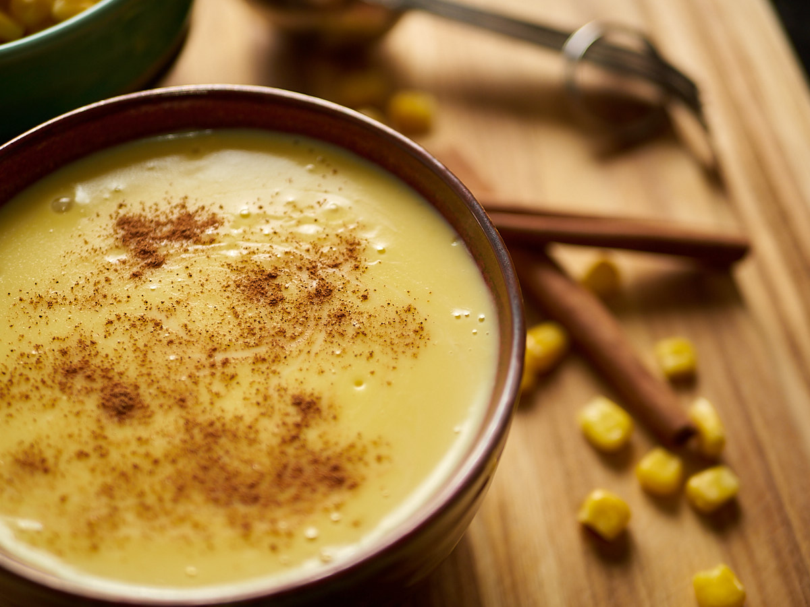

Atol de Elote is a traditional drink of Mesoamerican origin. It is served hot and it warms the soul. The atole is easy to make although it takes a little bit of time and patience. In the end though, you’ll have made something so delicious and well worth the effort!
The original Mesoamerican recipe calls for young white corn on the husk. It can be difficult to find that type of corn, so instead, I opted to make my recipe with organic yellow corn, which is much easier to find. The traditional recipe also doesn’t use cornstarch but I found that by adding a few tablespoons in, it gives the atole a richer consistency, which makes it tastes better.
I’ve written down the ingredient list along with each step below. However, if you prefer to watch a video of the preparation instead, then please visit my YouTube Channel. I hope you enjoy it and let me know if you make it!
Equipment
- Blender
- Nut Milk Bag or Thin White Kitchen Towel
- Pot
- Bowl
Ingredients
- 5 Cups Organic Whole Milk
- 568 grams Organic Yellow Corn
- 2 Sticks Cinnamon
- 4.5 Tbsp. Sugar – (Result is not too sweet. Adjust to your liking.)
- 1 tsp Diamond Crystal Kosher Salt – (This salt is not that salty, use less with other salts.)
- 5 Tbsp. Organic Cornstarch – (Thickening ingredient)
Instructions
Add to a Blender
- 1.5 cups of milk
- 568 grams of organic corn
- Blend thoroughly
Corn Liquid/Milk
- Pour the blended corn into a nut milk bag and close it. If you are using a thin white kitchen towel instead, place it over a bowl first and then pour the liquid into the towel while its edges are still outside the bowl. Wrap the towel into a sort of knot at the top.
- Squeeze out every last bit of liquid. This can take a few minutes.
- Once you are done, you will be left with just the dry part of the corn. Set the liquid aside.
Simmer Milk
- To a large pot, add 3 cups of milk and cook at a medium high heat.
- Add two cinnamon sticks to the milk.
- While the milk is warming up, prepare the cornstarch mixture in a separate container by using the remaining 1/2 cup of milk and 5 tablespoons of cornstarch.
- Mix very well to avoid having clumps form when you add it to the hot milk. Put aside for now.
Putting It All Together
- Keep stirring the milk consistently.
- Add the corn milk liquid immediately after the milk starts to simmer.
- Keep stirring and add 4.5 tablespoons of sugar and a pinch of salt (or 1 tsp of Diamond Kosher salt).
- Keep stirring and add the cornstarch milk mixture previously prepared. You'll notice that the Atol starts to have a thicker consistency.
- Keep stirring constantly until the Atol comes to a gentle simmer.
- Serve immediately and sprinkle a little bit of cinnamon powder if you like. Be careful sipping it!